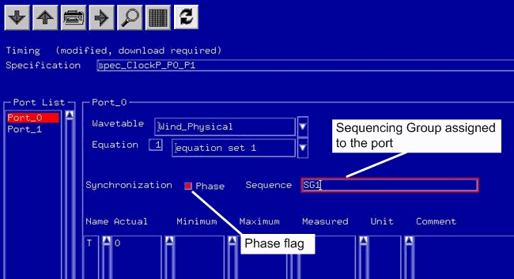

Timing Sequencing Groups
Timing sequencing groups are composed of timing ports. They are defined in the timing specification: The user interface provides a page per port. This page also provides the option to assign a port to a sequencing group and to set a phase flag for synchronous test execution.

To assign a port to a sequencing group you proceed as follows:
- Open the Spec Tool.
- Select the page of the port which you want to assign to a sequencing group. Enter the sequencing group name in the Sequence field.
Assign the same sequencing group name to all ports you want to include in the same sequencing group. Ports which are not explicitly assigned to a sequencing group automatically belong to the default sequencing group. That is, as long as you do not make any sequencing group assignments all ports are in the default sequencing group.
Note Where an explicit sequencing group is not needed, use the default sequencing
group. Assigning all ports to your own "default" group adds about 600μs per sequencer run.